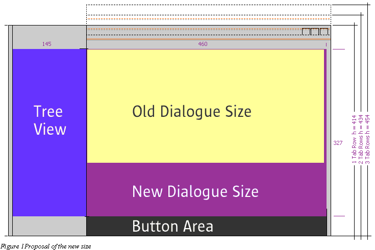
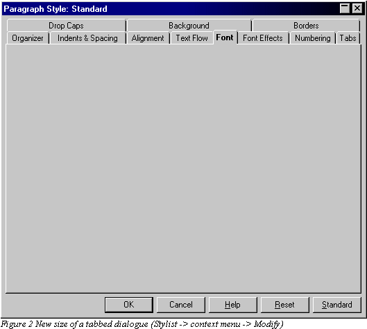
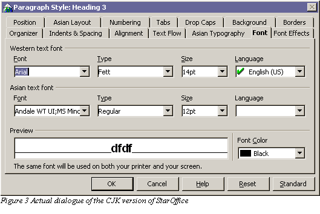
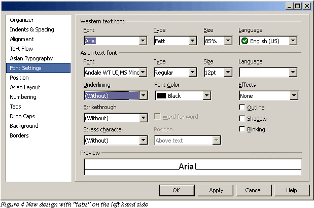

Christian Jansen
Proposal of a new dialogue size and a modified tab page handling.
Problem 1:
The current standard size of the tabbed dialogues is not large enough. Due to this fact we are running into trouble especially for the CJK – version of OpenOffice / StarOffice.
Solution:
The solution could be to provide the user a new dialogue which is nearly double in height than the old one. Figure 1 shows the proposed dialogue in a rough sketch. The dotted line visualizes the change in the total height, if more then one tab row is needed. In my opinion it is not recommended to extend the dialogue in width too, because most of the space is needed in the vertical. And it give the whole look and feel a nicer touch, because of the format which adopts the 4:3 ratio of the monitor. If the dialogue is extended with a tree view for example it will have a size of about 620 pixel in width (on a Windows system with a Tahoma UI-Font 8pt, at a resolution 1280x1024 with 96 dpi).

In a real world the dialogue could look like the scribble in figure 2.

Problem 2:
Another problem that should be solved is the circumstance, that to many tabs are confusing and hard to handle for the user. Especially if more than two rows are used in the design.
Solution:
Figure 3 shows the original design of the property dialogue of the CJK version. (Also this is still the old tab page size)

Figure 4 shows how it could look with the new design. It provides a lot of more clarity, than a dialogue with 14 tabs.
